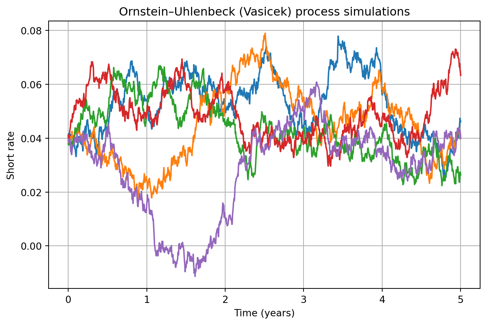
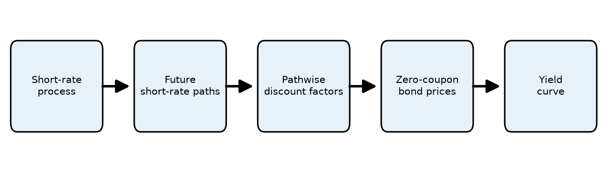
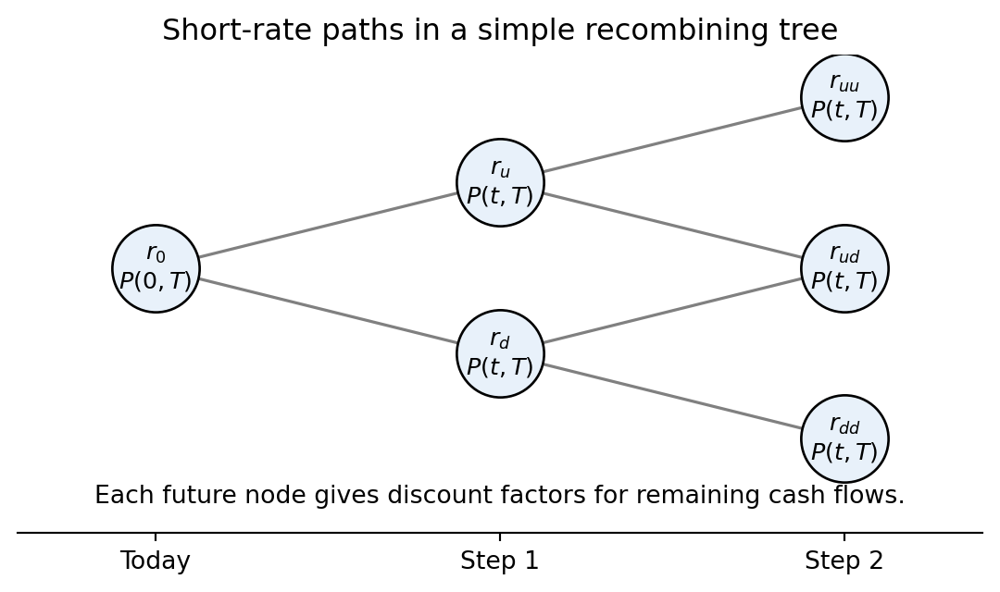
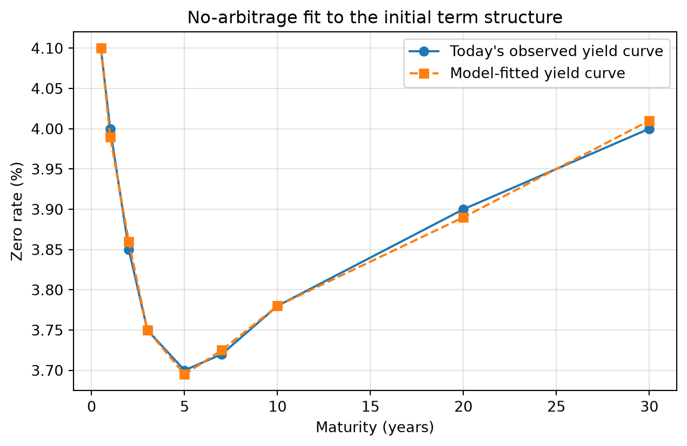
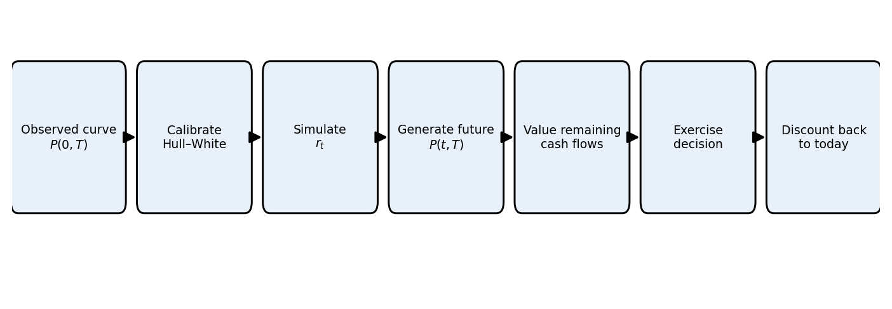
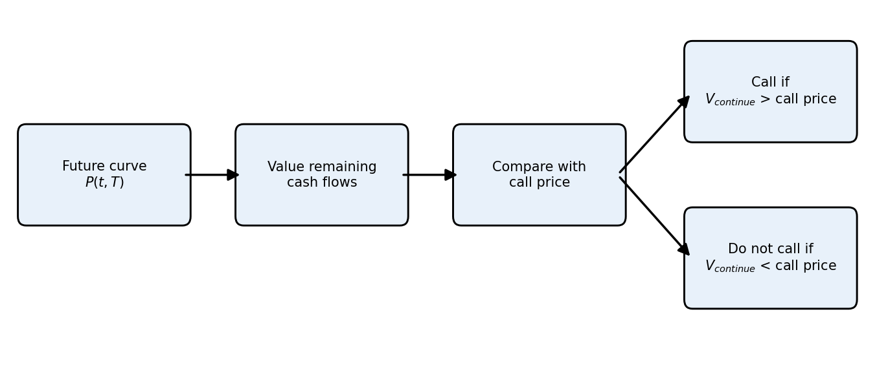

Lecture 7: Interest‑Rate Models
Learning Objectives
After completing this lecture you will be able to:
- Define an interest‑rate model and interpret its key components (drift, volatility and mean reversion).
- Explain the mathematics behind one‑factor stochastic processes used to model interest rates.
- Distinguish between arbitrage‑free and equilibrium interest‑rate models and understand the purpose of each.
- Explain when a stochastic short‑rate model is needed, and when a discount curve alone is sufficient.
- Describe how the Hull–White model fits today’s yield curve while modeling future rate dynamics.
- Discuss empirical evidence on interest‑rate changes, including how volatility relates to rate levels and the possibility of negative rates.
- Describe criteria for selecting an interest‑rate model in practice.
- Compute historical interest‑rate volatility using real or simulated data.
1 Mathematical Description of One‑Factor Interest‑Rate Models
An interest‑rate model is a probabilistic description of how interest rates evolve over time. In fixed‑income portfolio management, models help value bonds and derivatives and simulate future yield curves. Models must specify how the short‑term rate evolves and how that short rate determines the rest of the term structure.
A basic continuous‑time stochastic process
In a basic one‑factor model, the short rate \(r_t\) is assumed to follow a stochastic differential equation (SDE) of the form
\[ \mathrm{d}r_t = b\,\mathrm{d}t + \sigma\,\mathrm{d}z_t, \]
where:
- \(b\) is the drift term representing the expected direction of the change in the short rate.
- \(\sigma\) is the volatility term representing the magnitude of random shocks.
- \(z_t\) is a standard Wiener process (Brownian motion).
The drift and volatility are constants in this simplest model. If \(b=0\), the expected change in \(r\) is zero and the variance of the change over a time interval of length \(T\) is \(\sigma^2 T\). Models of this type are sometimes called normal models because rate changes are independent of the current level.
Itô process
In reality, drift and volatility are not constant; they can depend on the current level of the short rate \(r\) and time \(t\). An Itô process allows this by writing
\[ \mathrm{d}r_t = b(r_t,t)\,\mathrm{d}t + \sigma(r_t,t)\,\mathrm{d}z_t. \]
Here, \(b(r_t,t)\) and \(\sigma(r_t,t)\) can be functions of \(r_t\) and \(t\). Itô processes are the building block of most one‑factor term‑structure models.
Specifying the dynamics of the drift term
A common specification for the drift is mean reversion. The idea is that interest rates tend to revert toward a long‑run average \(\bar{r}\). The speed of mean reversion is measured by a parameter \(\alpha>0\). The drift becomes
\[ b(r_t,t) = -\alpha\bigl(r_t - \bar{r}\bigr). \]
When \(r_t\) is above the long‑run mean, the drift is negative; when below, it is positive. The speed \(\alpha\) controls how quickly \(r_t\) moves back toward \(\bar{r}\).
Specifying the dynamics of the volatility term
Volatility can depend on the level of rates. A flexible specification is the constant‑elasticity‑of‑variance (CEV) model, which sets
\[ \sigma(r_t,t) = \sigma_0\,r_t^{\gamma}, \]
where \(\sigma_0>0\) is a scale parameter and \(\gamma\) controls how volatility depends on \(r_t\). Special cases include:
- \(\gamma=0\) (Vasicek model): volatility is constant and independent of \(r_t\). This is a normal model.
- \(\gamma=1\) (Dothan model): volatility is proportional to \(r_t\). This is a lognormal model (changes are proportional to the level).
- \(\gamma=\tfrac{1}{2}\) (Cox–Ingersoll–Ross model): volatility is proportional to \(\sqrt{r_t}\). This avoids negative rates because \(\sigma_0 r_t^{1/2}\) goes to zero as \(r_t\) approaches zero.
Combining mean reversion in drift with square‑root volatility yields the mean‑reverting square‑root model:
\[ \mathrm{d}r_t = -\alpha(r_t-\bar{r})\,\mathrm{d}t + \sigma_0\sqrt{r_t}\,\mathrm{d}z_t. \]
🧮 Example: Simulating an Ornstein–Uhlenbeck process
An Ornstein–Uhlenbeck (Vasicek) process has constant volatility and mean‑reverting drift. The following Python code simulates sample paths:
This graph shows sample short‑rate paths reverting toward the long‑run mean.
2 Arbitrage‑Free versus Equilibrium Models
Interest‑rate models can be classified by how they determine the term‑structure evolution.
Arbitrage‑free models
Arbitrage‑free or no‑arbitrage models start with observed market prices of a set of benchmark instruments (Treasury bonds, swaps, etc.). The model assumes a random process for the short rate with unknown drift. Parameters are calibrated so that the model exactly reproduces the current term structure and prices of benchmark instruments. Once calibrated, the model can value other instruments consistently.
Common arbitrage‑free models include:
| Model | Type | Key features |
|---|---|---|
| Ho–Lee | Normal | Constant volatility; no mean reversion. Produces normally distributed rate changes. |
| Hull–White | Normal | Adds mean reversion to the Ho–Lee model. Useful for pricing callable bonds. |
| Kalotay–Williams–Fabozzi (KWF) | Lognormal | Models the logarithm of the short rate; no mean reversion. |
| Black–Karasinski | Lognormal | Lognormal model with mean reversion. |
| Black–Derman–Toy | Lognormal | Lognormal with endogenous mean reversion; calibrates to caps and floors. |
| Heath–Jarrow–Morton (HJM) | General | Multi‑factor model specifying the volatility structure of forward rates. Many models (Ho–Lee, Hull–White, KWF, etc.) are special cases. |
Because these models match observed prices, arbitrage opportunities are eliminated by construction. They are widely used in practice for pricing complex derivatives and bonds with embedded options.
Equilibrium models
Equilibrium models explain the term structure by appealing to economic fundamentals and investor preferences. They assume a particular utility function and derive the stochastic process for rates from equilibrium conditions. Parameters are estimated from historical data rather than calibrated to market prices. Examples include the Vasicek and Cox–Ingersoll–Ross (CIR) equilibrium models, as well as the Brennan–Schwartz and Longstaff–Schwartz two‑factor models.
Equilibrium models provide economic intuition but are less commonly used to price derivatives because they do not necessarily fit the current term structure. In practice, arbitrage‑free models dominate due to their ability to match observed prices and deliver consistent valuations.
3 When Do We Need a No‑Arbitrage Short‑Rate Model?
The first rule is simple: do not use a stochastic interest‑rate model unless the cash flows require one.
For a plain‑vanilla Treasury bond or a fixed‑rate corporate bond, the promised cash flows are usually fixed. Once we have a discount curve, valuation is mainly:
\[ P = \sum_i CF_i \times P(0,t_i), \]
where \(CF_i\) is the cash flow at date \(t_i\) and \(P(0,t_i)\) is today’s price of a zero‑coupon bond that pays $1 at \(t_i\). Equivalently, \(P(0,t_i)\) is the discount factor from \(t_i\) back to today. The discount factors can be bootstrapped from Treasury prices, swap rates, or other benchmark instruments. No model of how future interest rates might move is required.
If we calibrated a Hull–White model to the same initial discount curve, it would reproduce the same time‑0 value for this plain bond. That is useful as a consistency check, but it does not add much for valuing the plain bond itself.
Short‑rate models become important when the value of the security depends on future interest rates, not just today’s discount curve. This happens when cash flows are option‑like, path dependent, or reset based on future market rates.
Examples include:
- callable bonds;
- putable bonds;
- mortgage‑backed securities;
- caps and floors;
- swaptions;
- structured notes;
- other bonds with embedded options.
TipWhat to remember
A yield curve is a snapshot of today’s market. A short‑rate model is a rule for how interest rates may evolve through time. Plain bonds usually need the snapshot. Embedded options and interest‑rate derivatives need the evolution.
3.1 Yield curve versus short‑rate model
The yield curve gives today’s market‑implied discount rates across maturities. It answers: “What discount factors are implied by market prices today?”
A short‑rate model specifies the stochastic evolution of the instantaneous short rate \(r_t\). It answers: “How might interest rates move in the future, and how would those future paths affect cash flows and discounting?”
The distinction matters because a bond with fixed cash flows can be valued directly from today’s curve. A callable bond cannot. If rates fall, the issuer is more likely to call the bond. If rates rise, the bond is less likely to be called. The cash flows themselves depend on future rate paths, so a model of rate dynamics is needed.
| Feature | Plain fixed‑rate bond | Callable bond or rate derivative |
|---|---|---|
| Cash flows | Fixed or mostly fixed | State‑dependent cash flows |
| Main valuation input | Today’s bootstrapped discount curve | Future yield curves generated by a model |
| Typical method | Discounted cash flow | Backward induction, lattice, or simulation |
| Exercise decision | None | Compare continuation value with exercise value |
| Examples | Treasury bond, fixed‑rate corporate bond | Callable bond, MBS, cap, floor, swaption |
3.2 From a short‑rate process to a yield curve
A one‑factor short‑rate model starts by specifying the evolution of \(r_t\). Once we simulate or solve for possible paths of \(r_t\), each path implies a discount factor:
\[ \exp\left(-\int_0^T r_s\,ds\right). \]
Under risk‑neutral pricing, the zero‑coupon bond price is the expected discounted payoff:
\[ P(0,T) = \mathbb{E}^{\mathbb{Q}}\left[ \exp\left(-\int_0^T r_s\,ds\right) \right]. \]
The continuously compounded zero rate follows from:
\[ y(0,T) = -\frac{\log P(0,T)}{T}. \]
So the model generates the term structure through this chain:

For time‑0 pricing, \(P(0,T)\) is observed from the market or calibrated to the market. For a future date \(t>0\), \(P(t,T)\) is different: it is the model‑generated price at time \(t\) of a zero‑coupon bond maturing at \(T\), with \(T>t\).
In a one‑factor Hull–White model, once a future short rate \(r_t\) is reached in the tree or simulation, that state determines the entire future yield curve at that date. In other words, each future node gives a full set of discount factors:
\[ P(t,T) \quad \text{for all maturities } T>t. \]
3.3 A simple short‑rate tree intuition
A lattice or tree is a discrete version of the same idea. Starting from today’s short rate \(r_0\), rates branch into possible future values. Each path has its own sequence of short rates and therefore its own discount factor. At each future node, the short rate implies a full future yield curve. For an option‑embedded bond, the model also checks whether exercise is optimal at each node.

3.4 The Hull–White model
The one‑factor Hull–White model is a no‑arbitrage extension of the Vasicek model:
\[ dr_t = [\theta(t) - a r_t]\,dt + \sigma\,dW_t. \]
Here:
- \(a\) is the speed of mean reversion;
- \(\sigma\) is the short‑rate volatility;
- \(\theta(t)\) is a time‑dependent drift function;
- \(W_t\) is Brownian motion under the risk‑neutral measure.
At first, the model may look like it has only two parameters, \(a\) and \(\sigma\). If that were true, it could not match an entire observed yield curve. The key is that \(\theta(t)\) is not a single scalar parameter. It is a function of time.
Hull–White uses \(\theta(t)\) to fit today’s initial term structure. The scalar parameters \(a\) and \(\sigma\) mainly control the future dynamics: how quickly rates mean‑revert and how volatile they are. In practice, \(a\) and \(\sigma\) are often calibrated to interest‑rate option prices such as swaptions.
This is the main value added by Hull–White. It is not mainly a tool for repricing today’s plain fixed‑rate bonds. After calibration, those prices already come from the observed discount curve. Hull–White adds a no‑arbitrage way to generate future short‑rate scenarios and future yield curves that remain consistent with today’s market.

3.5 Calibration logic
The calibration workflow is usually:
- Bootstrap the market discount curve. Use observed benchmark instruments such as Treasuries, deposits, futures, or swaps to infer market discount factors.
- Fit the initial term structure. Choose \(\theta(t)\) so that the model’s zero‑coupon bond prices match market zero‑coupon bond prices.
- Fit future dynamics if needed. Calibrate \(a\) and \(\sigma\) to liquid interest‑rate options, such as caps, floors, or swaptions.
- Price the target instrument. Use the calibrated model in a lattice, tree, finite‑difference method, or Monte Carlo simulation.
For a plain fixed‑rate bond, step 1 is usually enough. Steps 2–4 become valuable when the instrument’s payoff depends on future rates or exercise behavior.
The full pricing logic for an option‑embedded bond is:

3.6 Callable bond intuition
At a future call date, the model produces a future yield curve \(P(t,T)\). That curve is used to value the remaining coupon and principal payments:
\[ V_{\text{continue}}(t) = \sum_i CF_i \times P(t,t_i). \]
The issuer compares this continuation value with the call price. If rates have fallen, the old high‑coupon bond is valuable to investors but expensive for the issuer to keep outstanding. The issuer is more likely to call the bond. If rates have risen, the continuation value is usually below the call price, so the issuer does not call.
For the bondholder at a call date:
\[ V(t) = \min\left(V_{\text{continue}}(t), \text{call price}\right). \]
The minimum appears because the issuer controls the call option. The bondholder receives the lower of keeping the valuable bond alive or being paid the call price.

NoteWhere the complexity enters
Without derivatives or embedded options, individual bond valuation is relatively straightforward. Fixed‑income complexity usually comes from cash flows that change with future rates, embedded optionality, prepayment behavior, portfolio construction and risk management, and credit, liquidity, or spread modeling.
4 Empirical Evidence on Interest‑Rate Changes
When choosing a model, it helps to understand actual interest‑rate behaviour. Two issues are often discussed: the relationship between volatility and the level of rates, and the possibility of negative rates.
Volatility of rates and the level of interest rates
Empirical studies of Treasury yield curves from the late 1970s to the 2000s show that the correlation between interest‑rate volatility and the level of rates changes across regimes. During periods when rates exceeded roughly 10% (late 1970s and early 1980s), volatility tended to increase with the level of rates. When rates were below 10%, the correlation weakened and volatility behaved more like a constant. This evidence suggests that in low‑rate environments (common since the 1990s), the normal model (constant volatility) may be adequate, whereas in high‑rate regimes a lognormal or square‑root model might better reflect the link between level and volatility.
Negative interest rates
Historical episodes show that nominal rates can occasionally be negative. During the U.S. Great Depression, Treasury bills traded at negative yields; more recently some short‑term Japanese yen deposits briefly had negative yields in the late 1990s. Models with constant volatility allow negative rates, while models where volatility is proportional to the rate (lognormal) do not. Empirical tests indicate that the probability of negative rates under realistic parameter values is small and has little impact on derivative pricing. Hence, many practitioners are comfortable using normal models even though they admit negative rates.
5 Selecting an Interest‑Rate Model
When choosing a model for bond portfolio management, consider:
- Purpose of the model. For pricing complex derivatives or option‑embedded bonds, use arbitrage‑free models that fit the current term structure. For economic insight or macroeconomic forecasting, equilibrium models may suffice.
- Volatility assumptions. In low‑rate environments, constant volatility models (Vasicek, Ho–Lee, Hull–White) perform well. In high‑rate regimes or when negative rates must be ruled out, lognormal or square‑root volatility (CIR, Black–Karasinski) may be preferred.
- Computational tractability. Models should allow efficient calibration and pricing. Multi‑factor models offer flexibility but are more difficult to implement.
- Data availability. Arbitrage‑free models require reliable market prices for a reference set of instruments; equilibrium models require long historical series to estimate parameters.
Ultimately, practitioners often choose the simplest model that fits the current term structure and provides robust valuations across scenarios.
6 Estimating Interest‑Rate Volatility Using Historical Data
Volatility is an important input for any rate model. Two common methods are historical volatility and implied volatility.
Historical volatility
Historical volatility uses past interest‑rate observations to estimate the standard deviation of rate changes. Suppose \(r_t\) is a series of weekly interest rates and \(\Delta r_t\) is the change from one week to the next. The sample standard deviation of \(\Delta r_t\) provides a weekly volatility. To annualize, multiply by \(\sqrt{52}\) (assuming 52 weeks per year). For daily data, multiply the daily standard deviation by \(\sqrt{n}\), where \(n\) is the number of trading days in a year (commonly 250 or 260).
Numerical example (artificial data)
Consider a hypothetical sequence of weekly short rates (in percent) over 10 weeks:
| Week | Rate (%) | Weekly change (\(\Delta r_t\), bps) |
|---|---|---|
| 1 | 2.00 | – |
| 2 | 2.05 | +5 |
| 3 | 2.04 | −1 |
| 4 | 2.08 | +4 |
| 5 | 2.02 | −6 |
| 6 | 2.10 | +8 |
| 7 | 2.09 | −1 |
| 8 | 2.12 | +3 |
| 9 | 2.15 | +3 |
| 10 | 2.14 | −1 |
To compute the sample standard deviation of the changes, convert basis points to decimal form (e.g., +5 bps = 0.0005). Using the eight non‑missing changes (+5, −1, +4, −6, +8, −1, +3, +3, −1) we find:
- Mean change = \(\frac{5 - 1 + 4 - 6 + 8 - 1 + 3 + 3 - 1}{9} = \frac{14}{9} \approx 1.556\) bps.
- Variance = \(\frac{1}{8}\sum_{i=1}^{9} (\Delta r_i - \text{mean})^2\). Calculating each squared deviation and summing yields \(\approx 94.22\) (bp)\(^2\). The sample variance is \(94.22/8 \approx 11.78\) (bp)\(^2\).
- Standard deviation = \(\sqrt{11.78} \approx 3.43\) bps per week.
- Annualized volatility = \(3.43 \times \sqrt{52} \approx 24.7\) bps per year.
Thus, this simplified data set implies an annual volatility of about 25 basis points.
Implied volatility
Implied volatility derives from market prices of option‑like instruments (caps, floors, swaptions). An option pricing model expresses the option price as a function of volatility. By inverting the model using observed prices, one obtains the market’s expected volatility. Implied volatility reflects current market conditions and forward‑looking expectations, whereas historical volatility reflects past behaviour.
Key Points
- An interest‑rate model specifies a stochastic process for the short rate and derives other rates from it. Drift, volatility and mean reversion are key components.
- One‑factor models use a single source of uncertainty (Brownian motion). Mean‑reverting drift and level‑dependent volatility are common specifications.
- Arbitrage‑free models (Ho–Lee, Hull–White, KWF, Black–Karasinski, BDT, HJM) calibrate to market prices and are widely used for valuation. Equilibrium models (Vasicek, CIR, Brennan–Schwartz, Longstaff–Schwartz) derive rates from economic assumptions.
- Plain fixed‑rate bonds usually do not need a stochastic short‑rate model; a bootstrapped discount curve is typically enough.
- Short‑rate models are central when cash flows depend on future rates, such as callable bonds, mortgage‑backed securities, caps, floors and swaptions.
- In the Hull–White model, \(\theta(t)\) is a time‑dependent function calibrated to fit today’s term structure; \(a\) and \(\sigma\) control future mean reversion and volatility.
- \(P(0,T)\) is today’s observed or calibrated discount factor; \(P(t,T)\) for \(t>0\) is a model‑generated future discount factor used to value remaining cash flows.
- Callable bond valuation requires future yield curves because the exercise decision compares the continuation value with the call price.
- Empirical evidence suggests that volatility is largely independent of the level of rates when rates are below about 10%, supporting the normal model; at higher levels, volatility may increase with rates, favouring lognormal specifications.
- Negative nominal rates can occur but are rare. Normal models admit negative rates; the probability of occurrence is small under realistic parameters.
- Historical volatility is computed from past rate changes and annualized using square‑root‑of‑time scaling; implied volatility is extracted from option prices.
Suggested readings: Fabozzi, Bond Markets: Analysis and Strategies, Chapter 17.